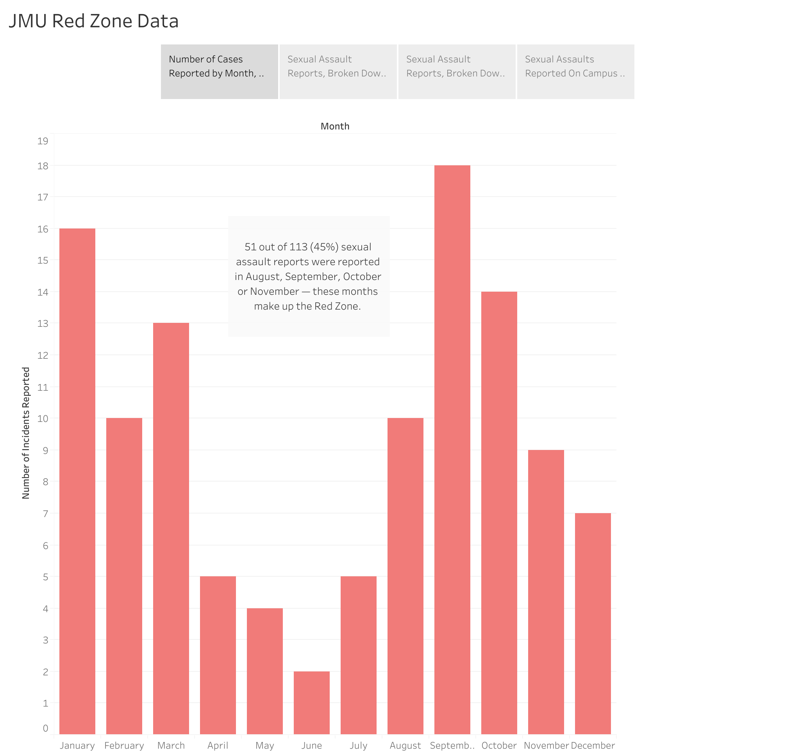
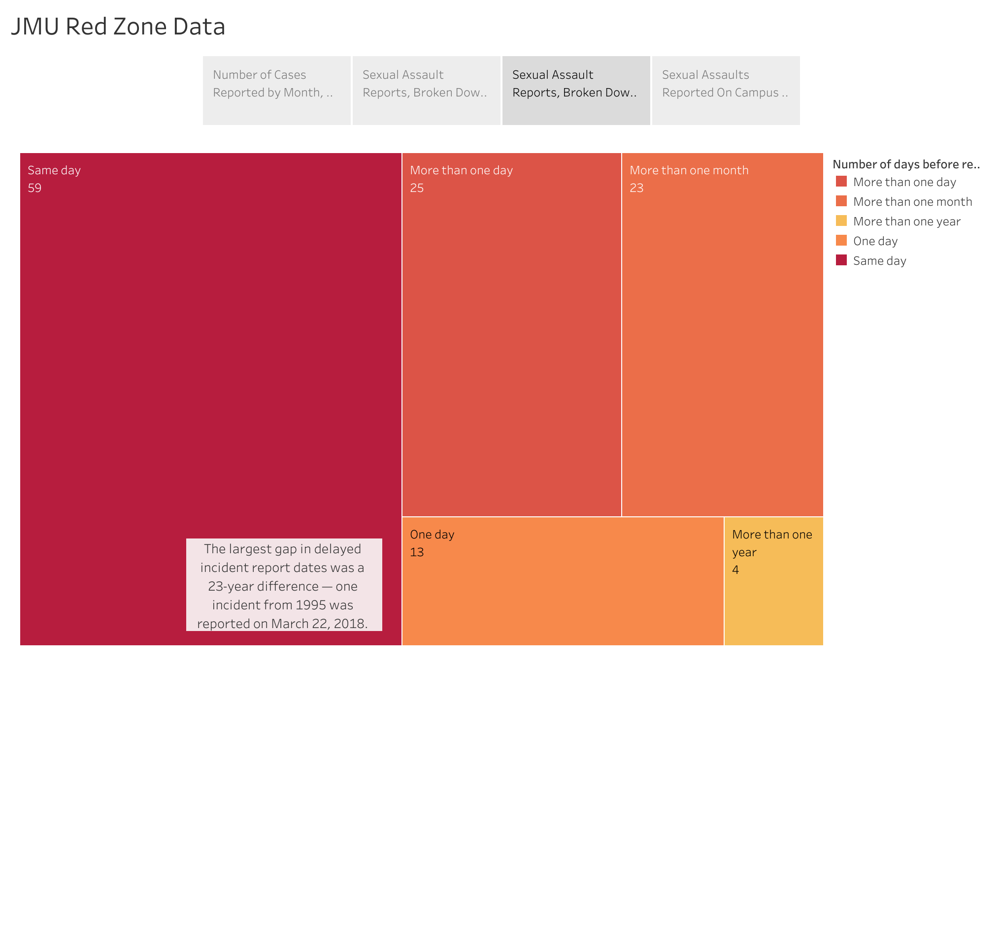
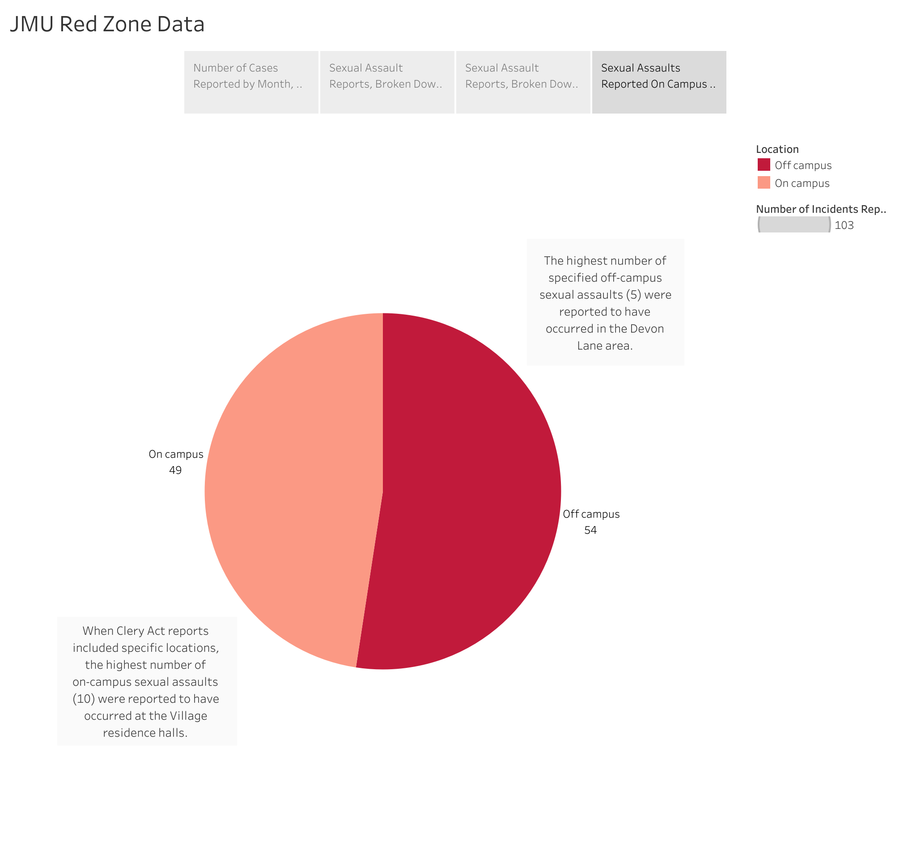
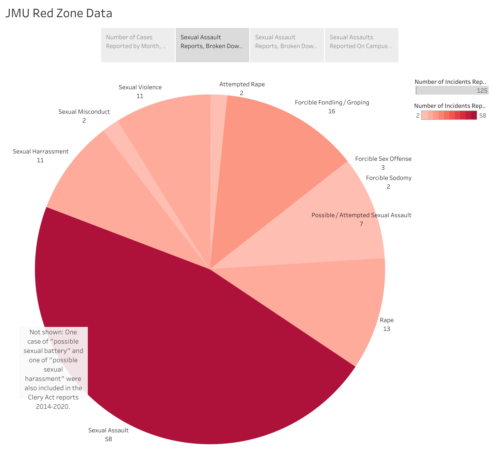
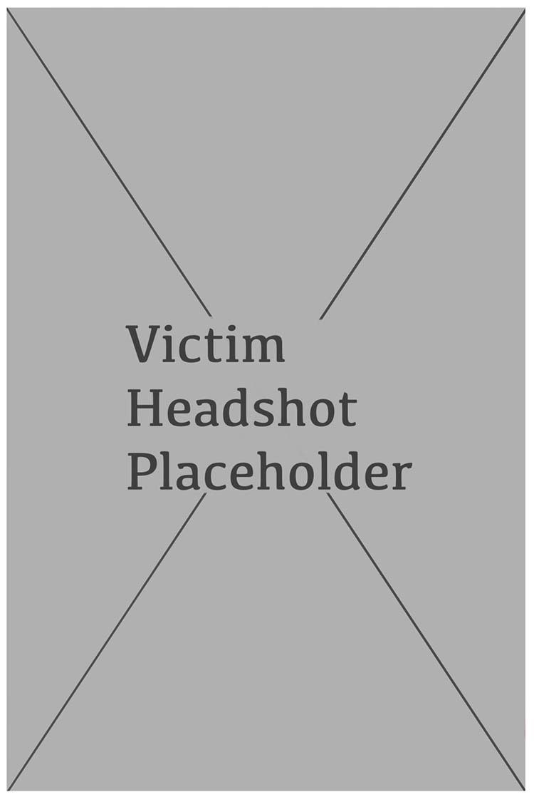

The Red Zone
By: [Group Members Here]
JMU's sexual violence prevention efforts fall into three categories: primary, secondary and tertiary efforts. Veronica Jones, JMU's associate director for health promotion, described those three categories as the following:
Primary prevention means stopping something before it starts and involves methods such as, like through education on healthy relationships, communication and bystander intervention. Secondary prevention is focused onmore of the awareness aspect — things like sexual violence prevention programming or Domestic Violence Awareness Month. Finally, tertiary prevention involves the resources and support for individuals who have experienced sexual assault, Jones said.
Jones' office in the University Recreation Center (UREC) — previously housed in University Health Center's (UHC) “The Well” — focuses solely on primary prevention efforts. Secondary and tertiary efforts are handled by the UHC's “The Well.”
Those efforts — which fall under the umbrella of “campus health promotion” — stand alongside other programs involving substance misuse prevention, wellness coaching and bystander intervention.
As part of the work by the campus health promotion office — Jones' office — incoming freshmen, transfer students and graduate students must participate in online training programs through the learning platform Everfi. The state of Virginia has a contract with Everfi and JMU's contract with the company has been in place since 2012.
The two mandatory programs for incoming students are AlcoholEdu and Sexual Assault Prevention. Human Resources oversees mandatory employee training on Everfi, which includes sexual harassment training, Title IX training and diversity and inclusion training.
As primary administrator for the student programs, Jones said she ensures that JMU content is integrated in the AlcoholEdu and Sexual Assault Prevention courses. This content includes university-specific policies, student handbook definitions and resources. Jones said the student completion rate for these Everfi courses is about 75%. When students complete these courses outside of the semester they're assigned, they may not show up as complete on reports, which Jones said is why the rate isn't at 100%. Students who don't complete the courses by their deadline receive holds on their student accounts until the trainings are finished.
“Every time I talk to Everfi, they're like, 'That's really good,'” Jones said. “So we are doing very good with that.”
This year, Jones said the health promotion team trained first year orientation guides (FROGs) and orientation peer advisors (OPAs) — students who help new Dukes navigate their arrival on JMU's campus — to have a discussion with their student groups about relationships and community well-being. She said the health promotion team also leads a program with international students about relationships and communication consent.
Jones' team is currently working to restructure and relaunch the bystander intervention program Green Dot, which used to be provided to incoming students and is currently available for student organizations, classes and student staff. She said she had “mixed feelings” about Green Dot previously being mandatory for incoming students.
“I believe that people need those skills,” Jones said. “And yet, you cannot expect or empower the newest members to a community to change the norms for everyone else.”
When it comes to sexual wellness programming, the health promotion team works with groups other than incoming students, too. Jones said her department works with hall directors, resident advisors (RAs) and Student Life staff to provide trainings on sexual wellness, how to recognize relationship abuse and harm and where resources are available on campus.
There are also opportunities for student organizations to work with the health promotion team — Jones said last year, her office partnered with Fraternity and Sorority Life (FSL) to provide training for the organization's leaders.
However, even with the sexual and relationship programming that the health promotion team currently has in place, Jones said there's a gap in who they're able to reach. The Everfi sexual assault prevention program is mandatory for incoming students, but after that, any other resources to provide education on sexual wellness are optional.
In order to engage with upperclassmen, Jones said her team has done much to reach out to campus student organizations. She said they're also trying to come up with more passive or informal messaging, like posters around campus with information on sexual wellness. However, connecting with upperclassmen remains a difficulty.
“I think it's really hard because we have a really great mechanism for reaching a lot of our first-year students with required programming,” Jones said. “How do we reach our other students? That's the really hard part about it.”
Jones said the Red Zone — the period in the academic year from the start of the fall semester to Thanksgiving break wherein nationally, the most sexual assaults occur — is a problem at every university, including JMU. She said the Red Zone as a specific issue is difficult to tackle because, at the beginning of college, so many individuals with varying levels of sex education and experiences are coming together in one place with newfound freedom.
“That first time here is a time where it is a prime time for, unfortunately, individuals to experience harm and be harmed by others,” Jones said. “We are very aware of [the Red Zone] — I mean, in our research, it's very prevalent.”
While the Red Zone remains a problem, Jones said, her team doesn't specifically market efforts as those that address it. She said this kind of strategy would be fear-based programming, which they steer away from. Instead of being motivated by fear, Jones said she believes people would rather be empowered with knowledge. Instead, she said, she believes “everything we do is addressing the Red Zone.”
In order for students to protect themselves from sexual assault, Jones encouraged them to be curious in learning about how to stop these behaviors both on and off campus. She said self-awareness is also important when assessing these problems at JMU — not just during the red zone, but all the time.
“I would say it's not even during the red zone — it's all the time,” Jones said. “I have heard some preventionists say a whole college experience can be a red zone, because everyone is at risk.”
Title IX Timeline
1972: Title IX enacted
President Richard Nixon signs Title IX of the Education Amendments Act. Institutions receiving federal aid are barred from enacting sexually discriminatory policies.
1984: Grove City College v. Bell
The Supreme Court argues that Title IX requirements do not apply to the institution as a whole, but only areas benefiting from federal funding. This allows for discrimination in programs such as athletic.
1988: Civil Rights Restoration Act
The decision in Grove City College v. Bell is overturned in the Civil Rights Restoration Act. Title IX applies to the entire institution.
1997: “Sexual Harrasment Guidance” published
The U.S. Department of Education's Office of Civil Rights (OCR) publishes “Sexual Harassment Guidance: Harassment of Students by School Employees, Other Students or Third Parties,” establishing institutional responsibility for the punishment of student sexual harassment.
1999: Davis v. Monroe County Board of Education
The Supreme Court finds that for student-on-student harassment, the institution is required to pay damages if it acted with deliberate indifference to known harassment of a victim. Such harassment needs to be “so severe, pervasive and objectively offensive,” as to deny the victim the benefits of education.
2011: Dear Colleague Letter
The Obama Administration Department of Education issues a public letter laying out its attitude towards sexual harassment in educational institutions. It emphasizes that Title IX protections apply to all students.
2014: Obama's Title IX guidance published
The administration defines its Title IX goals, emphasizing OCR's power to withdraw federal funding for cases not dealt with by the institution. Additionally, it began investigations into university mishandlings of past cases.

2016: Republican platform specifically devotes section to Title IX
The platform criticized Obama-era guidance, blaming it for contrevening the “country's legal traditions and must be halted before it further muddles this complex issue and prevents the proper authorities from investigating and prosecuting sexual assault effectively with due process.”
2017: Betsy Devos revokes Obama-era guidelines.

2018: Trump Administration proposes new Title IX rules
Education Secretary Betsy Devos reveals plans for Title IX changes, including the redefinition of sexual harassment, removing the requirement to address off-campus incidents and reforming the trial process to allow for cross-examination.After the proposal, there are over 100,000 comments during the commenting period.
2020: New rules finalized
JMU's Title IX Policy
JMU's Title IX Office “treats all disclosures and reports of sexual misconduct with great care and confidentiality and without bias, pre-judgement, or stereotyping, while balancing the duty to provide for individual and campus safety,” according to its website. Amy Sirocky-Meck, director of the Title IX Office and the university's Title IX coordinator, is delegated by JMU President Jonathan Alger to interpret the national policies from the Department of Education.
Policies 1340 and 1346 of Title IX — the federal law which prohibits sex discrimination — detail JMU's policy in cases of sexual misconduct and sexual harassment, respectively. Both sections operate on similar policy, purpose and procedure; the difference lies in their definitions of sexual misconduct and sexual harassment outlined in Section 3 of both documents.
.png){kind=link}
.png){kind=link}
{kind=link}
Policy 1340 identifies sexual misconduct as emcompassing “sexual assault, sexual violence, sexual harassment, sexual exploitation, stalking, dating violence, domestic violence, and non-consentual relationships” regardless of sexual orientation or gender identity. It defines sexual harassment as verbal, non-verbal or physical “conduct consisting of unwelcome or offensive sexual advances, requests for sexual favors, or other conduct of a sexual nature…”
Policy 1346 expands on this definition, deeming an act sexual harassment if it meets one of three criteria: conduct that's quid pro quo, an action that denies an individual equal access to the university's programs or actions deemed sexual misconduct as defined in Policy 1340.
The reporting process for alleged sexual misconduct or harassment are identical, according to Section 6.1 of both documents. Any activity that could constitute sexual misconduct or harassment should be reported directly to the Title IX Office, where individuals may also file a formal complaint. Complaints can be dismissed, according to Section 6.5, if a complainant withdraws the complaint or allegation, the respondent is no longer a student or employee of the university or if “specific circumstances” prevent the gathering of conclusive evidence; dismissals may be appealed as outlined in Section 6.8.
{kind=link}
{kind=link}
{kind=link}
As detailed in Sections 5.4 and 6.2, “responsible employees” (do Kam's notes identify who falls under this category?) are required to disclose any information concerning alleged sexual misconduct or harassment to the Title IX Office, while those deemed “confidential resources” (identify) aren't required to disclose information. Campus Security Authorities — like the JMU Police Department — don't fall under this policy and are required by the Clery Act to report any crime.
{kind=link}
{kind=link}
Student respondents can be removed from campus by a subset of the Behavioral Assessment Team (BAT) if “the university determines there is an immediate threat to the physical health or safety of any student or other individual arising from the allegations of sexual harassment,” according to Section 6.9.4. “Emergency removal” can be challenged within three calendar days by writing to Vice President for Student Affairs Tim Miller.
{kind=link}
A ruling on a student's formal complaint, outlined in Section 6.6, is conducted via a live hearing by the Office of Student Accountability and Restorative Practices (OSARP) and is overseen by Sirocky-Meck. After reaching a decision, a written document is issued determining the respondent's responsibility, the university's disciplinary action and its restorative action for the complainant's Title IX rights.
{kind=link}
An alternative resolution to the formal complaint process, stated in Section 6.9.7, may be granted at the university's discretion “on a case-by-case basis” but requires both the respondent's and the complainant's written consent — which may be revoked at any time. This process, however, “is not available when the complainant is a student and the respondent is an employee.”
{kind=link}
If a student is found responsible for sexual misconduct or sexual harassment, they may be suspended or expelled for violating Student Standards of Conduct, according to Section 6.9.6. The student's transcript will be marked with a notation, which will be automatically removed by the Office of the Registrar at the end of the suspension; notations in cases of expulsion are permanent. For confirmed instances of sexual harassment, OSARP may honor a request for removal after three years for “good cause shown.”
{kind=link}
Decisions may be appealed based on three criteria in Section 6.8 that may affect the matter's outcome: procedural irregularity, new evidence not “reasonably available” at the time of dismissal or determination of responsibility or any conflict of interest discovered among Title IX officials associated with the case.
The Data
   Hannah’s storytory
She was 15, it was the summer. It happened on a beach; it was her first time.
Hannah Pollock was spending time on a family vacation with her boyfriend and his family when he sexually assaulted her. Pollock and her boyfriend were on the beach when it happened, and when it was over, her boyfriend told her she shouldn't be upset.
“He told me that I shouldn't be upset because if I didn't want to do it, it meant I didn't love him,” Pollock said, “and that I definitely wanted to because I should have said no if I didn't want to.”
And when Pollock decided to confide in certain people about what happened, she was met with questions — if she had already been kissing him, making out with him or touching him before it had happened.
“You could be making out, you could be right about to have sex, completely naked, and you could still say no because you don't want to do it,” Pollock said. “We need to have autonomy over our own bodies.”
There is no more content provided for this section. So a place holder story and image will be added.
Victim 2's Story
There is no more content provided for this section. So a place holder story and image will be added
She was 15, it was the summer. It happened on a beach; it was her first time.
Hannah Pollock was spending time on a family vacation with her boyfriend and his family when he sexually assaulted her. Pollock and her boyfriend were on the beach when it happened, and when it was over, her boyfriend told her she shouldn't be upset.
“He told me that I shouldn't be upset because if I didn't want to do it, it meant I didn't love him,” Pollock said, “and that I definitely wanted to because I should have said no if I didn't want to.”
And when Pollock decided to confide in certain people about what happened, she was met with questions — if she had already been kissing him, making out with him or touching him before it had happened.
“You could be making out, you could be right about to have sex, completely naked, and you could still say no because you don't want to do it,” Pollock said. “We need to have autonomy over our own bodies.”
There is no more content provided for this section. So a place holder story and image will be added.
JMU's Response
This sections content is also incomplete so the unfinished police interview will be in it's place.
What is the most common crime reported to JMUPD?
Noise Violations
What evidence is needed to determine the type of a crime? For example, sexual assault vs rape vs forced fondling? Which type is the hardest to gather evidence for and investigate?
Virginia Law Enforcement uses the Code of Virginia and the associated case law developed in Virginia Courts and the Federal Courts associated with the 4th Circuit to determine the associated crime for all incidents. Physical evidence can be the most difficult for law enforcement to collect.
What is the protocol when a sexual assault report comes in?
Each incident remains different and independent and must be viewed through empathetic and caring lenses. No incident is ever the same and a skilled officer must evaluate the best procedures to ensure the survivor does not experience a re-traumatization of the initial incident. The first protocol is ensure the safety, health, and well-being of the survivor.
There were many instances shown in the data where reports of sexual assault came in months or even years later - do you know why these reports are sometimes made much later?
On a college campus, survivors have multiple avenues to report their incidents. Survivors are never required to report their incident to law enforcement, although we believe it may be the best practice. We understand and attempt to empathize with survivors about the trauma they may have been through and never want to re-traumatize them. We want survivors to feel safe and we want to assist survivors in re-empowering themselves and that process may not begin with law enforcement.
What is the communication process like between HPD and JMUPD? Is it a collaborative effort, or does one precinct take the lead on sexual assault cases?
JMU PD and HPD have a collaborative working relationship. Every case is unique and our investigative units consult with each other on all cases, not just sexual assaults, to ensure the best possible outcome for survivors, and all persons associated with crimes.
How often do these reports result in the perpetrator being caught and prosecuted?
We do not have immediate numbers for this question, but we ensure all appropriate resources are offered to survivors and we provide all available information to help re-empower survivors throughout the entirety of the investigation and prosecution.
How long of a process is a typical sexual assault case from the initial report to the prosecution and/or conviction of the perpetrator?
These cases vary in this process and we cannot provide information for a “typical case”.
What is the most challenging part in the reporting/investigation process? Why?
As law enforcement, we find the most challenging part of this process is the prevention. We want to prevent sexual assaults from occurring in the first place and believe we can assist our community become safer through strategic programming, such as the Green Dot program and the Rape Aggression Defense (RAD) System. We believe in prevention through counseling and bringing the topic to a much-needed discussion with our community. We believe if more people understand the devastation of these crimes, and all crimes, we can help build public trust to eliminate predators and empower our community.
What would you tell victims who are reluctant to report their assaults for fear that they won’t be believed or that nothing will come of it, particularly JMU students?"
This is a very personal choice and we as law enforcement will be here to listen to them and help re-empower them and make them whole. We will never re-traumatize a survivor and we will do everything legally in our power to bring their case to closure.